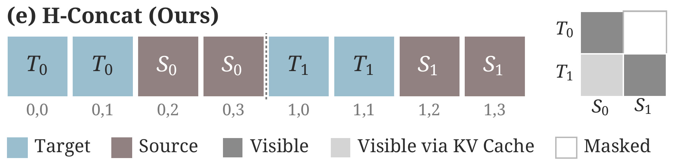

Method
How to Represent the Camera?
Hover over (or tap) a figure to play its animation.

Camera parameters are scale-ambiguous. A small object near the input camera and a large object farther away give the same input image, but the same target camera sees them at a different size, position and angle, so the target view is not determined.

Explicit geometry is incomplete and distorted. A point cloud or depth warp of the input image only covers the surface seen from the input camera. Under a large viewpoint change, the object breaks apart and the rendering misleads the video generation.

Our anchor rendering is scale-aware and view-complete. We reconstruct the anchor with SAM 3D, so target cameras at any angle see the whole anchor with the correct size and pose.
AnyCam: the Anchor Rendering Represents the Camera

- Select an anchor object in the source video.
- SAM 2 tracks the anchor; its cut-out is the source camera representation.
- SAM 3D reconstructs the anchor and places it in the source camera.
- Rendering it along the target trajectory gives the target camera representation.
- Both enter as channel conditions; source and target are stacked in height (H-Concat).
- The diffusion transformer denoises the target half; the VAE decodes the target video.
H-Concat: Time-Synchronized Concatenation

We build AnyCam on Wan2.2-5B. Instead of concatenating source and target frames along time, which needs the whole source before the first target frame, H-Concat stacks the noisy target and the clean source along the height. With the 3D RoPE, the target token at frame j and row h has position (j, h) and the source token below it (j, h + H), so source and target frames of the same time step share one temporal index. This adds no parameters and no attention mask, and it is what makes streaming possible.
Streaming Generation: AnyCam-AR

- Chunk-wise causal attention
- each chunk carries its own source rows and anchor rendering
- Teacher forcing + DMD
- few-step student distilled from the bidirectional model
- 3.6 FPS
- on 1 GPU, first chunk after 2.5 s
- 11.2 FPS
- on 4 GPUs, first chunk after 2.4 s
Training Data
Training pairs come from synchronized multi-camera videos (7,810 MultiCamVideo pairs) and static-scene captures (5,217 DL3DV pairs). We reconstruct the anchor, align it to the dataset cameras and render it, so the target condition is pixel-aligned with the target video.
Anchor alignment. Stage 1 searches one scale for the translation of all relative poses, maximizing the IoU between the rendered anchor and its SAM 2 masks over 20 views; stage 2 refines rotation, translation and scale on the blurred difference between the rendered opacity and the masks.